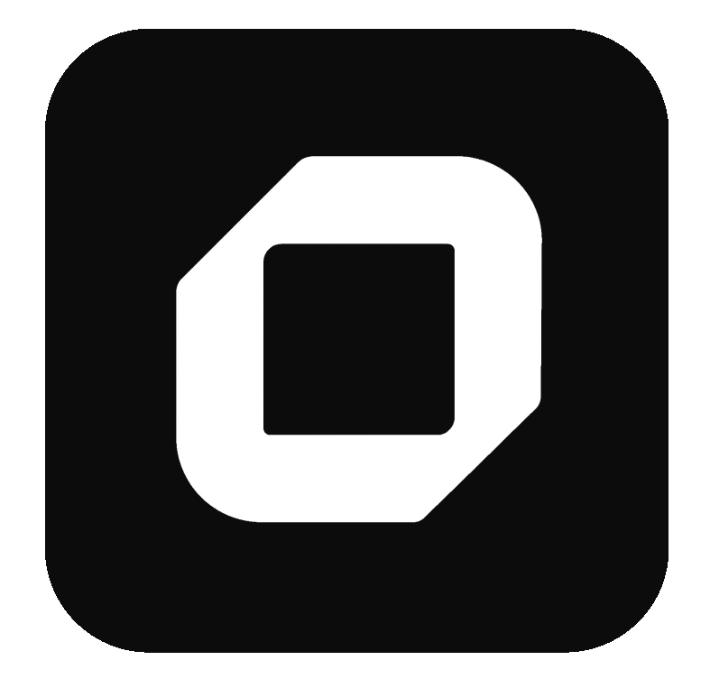

AI agent automation
给 Agent 的不是网页，而是动作接口
Obscura 不是在帮你“打开网页看一眼”，而是在把浏览器变成一组可调用动作：导航、等待、抓取、渲染、导出、对接上层编排器。
它不是桌面浏览器，而是面向自动化和规模化抓取的 headless browser engine：用 Rust 写核心，真实 JavaScript 交给 V8，外层用 CDP、Puppeteer、Playwright、Stealth 和 MCP 把浏览器能力变成可编排的工具。
Obscura 的卖点不是“再做一个浏览器”，而是把无头浏览器压成一个更轻、更快、更适合 AI agent 的自动化底座：能跑真实 JS、能对接主流自动化库、也能直接暴露 MCP 工具给 Agent 用。
README 给出的核心叙事很稳定：核心是 Rust 引擎，执行层是 V8 + CDP，外层是抓取、自动化、Puppeteer / Playwright、MCP 和 stealth 能力。

轻量、stealthy、Rust 实现。适合需要把浏览器能力产品化、工具化、规模化的自动化任务。
Chrome 的问题不是“不能自动化”，而是太像一台桌面浏览器：重、慢、启动成本高。Obscura 把浏览器缩成一个面向规模化任务的执行核，目标是让爬虫、Agent 和自动化脚本更轻地接到同一套浏览器能力上。
Obscura 不是在帮你“打开网页看一眼”，而是在把浏览器变成一组可调用动作：导航、等待、抓取、渲染、导出、对接上层编排器。
它强调真实 JavaScript 执行，这意味着很多依赖前端渲染、异步加载和交互脚本的网站，不需要退回到纯 HTML 解析。
README 明确把 Puppeteer / Playwright 兼容性放在核心叙事里，方便把它嵌进既有自动化工程，而不是重写整条链路。
| metric | Obscura | Headless Chrome |
|---|---|---|
| Memory | 30 MB | 200+ MB |
| Binary size | 70 MB | 300+ MB |
| Page load | 85 ms | ~500 ms |
| Startup | Instant | ~2 s |
Linux x86_64、Linux ARM64、Arch Linux (AUR)、macOS Apple Silicon、macOS Intel、Windows。
如果你只想快速接入浏览器能力，Docker 是最容易把 Obscura 塞进现有流水线的方式。
适合要自定义特性、调试引擎细节、或把它嵌入更复杂系统的人。
obscura fetch https://example.com obscura fetch https://example.com --selector title obscura fetch https://example.com --eval 'document.title' obscura fetch https://example.com --output dump.html
obscura scrape https://site1.example https://site2.example --concurrency 10 obscura fetch https://example.com --proxy socks5://127.0.0.1:1080 obscura fetch https://example.com --timeout 30
README 还强调可以绕过 JS / DOM 层处理原始响应体，这对图片、JSON、CSS、JS 等非 HTML 资源很重要。
README 把 Chrome DevTools Protocol 和两个主流浏览器自动化框架都列进去了，这意味着它不是另起炉灶，而是在现有生态里替换执行层。
| CDP server | 暴露浏览器能力给外部工具 |
| Puppeteer | 保留脚本自动化路径 |
| Playwright | 便于接入更广的测试/抓取栈 |
Obscura 还提供 MCP server，README 里明确写了 stdio 和 HTTP 两种启动方式。这让 Claude Desktop、Cursor 这类客户端可以直接调用浏览器工具。
obscura mcp obscura mcp --http --port 8080 # endpoint: http://127.0.0.1:8080/mcp
把容易暴露自动化环境的浏览器特征压低，适合需要在规模化抓取里减少被识别风险的场景。
对跟踪脚本和相关请求做阻断，帮助自动化任务更干净地获取页面内容。